DISTRICT ATTORNEY WARNING
A wrongful accusation will allow the true killer to slip into the night and ruin your detective record. Ensure your deduction accounts for the locked study door, the muddy footprint, and the timeline gaps before submitting.
Every suspect has a story. Only one has the truth.
On a stormy autumn midnight at Blackwood Manor, real estate magnate Victor Blackwood was discovered dead inside his private study. The door was bolted from the inside. Four people were in the estate. Four sworn alibis. But in the shadows of the manor, every clock ticks toward a lie.
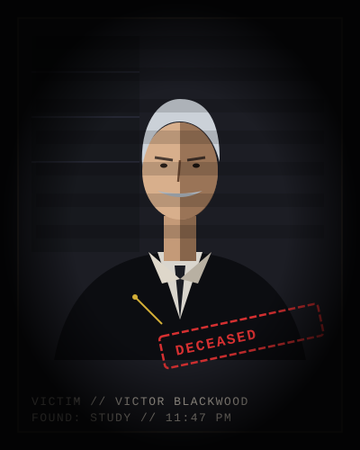
Initial police briefing and crime scene survey of Blackwood Manor.
At approximately 11:52 PM, housekeeper Martha Higgins alerted police after hearing a violent thud and shattered crystal coming from Victor Blackwood's private study. The heavy solid oak door was locked with an internal heavy brass slide bolt which cannot be engaged or thrown from the outside corridor.
When officers breached the room at 11:58 PM, Victor Blackwood was discovered prone beside his mahogany desk. A vintage gold pocket watch had broken upon impact, its hands frozen at 11:47 PM.
THE INVESTIGATOR'S CRUCIAL PUZZLE:
While the study door was bolted from the inside, the north-facing casement window overlooking
the rose trellis was discovered unlatched and swinging open in the gale.
Fresh mud and soil traces were spotted across the window sill.
The killer either entered or escaped via the garden trellis.
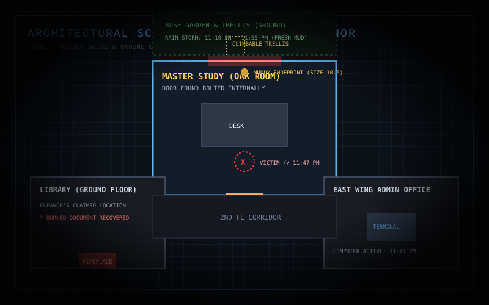
Four persons were verified present on the estate grounds between 10:00 PM and midnight. Each gave an alibi. But someone tracked fresh garden mud into that 2nd floor room. Search for discrepancies in timestamps and physical access.
Every suspect had a reason to despise Victor Blackwood. Inspect their profiles, cross-examine motives, and track who is concealing the truth.
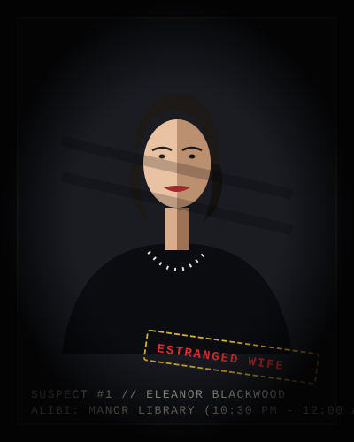
Victim's Estranged Wife
Reading alone in the ground-floor library from 10:30 PM to midnight.
Victor threatened to finalize divorce and freeze her trust fund assets.
Business Partner & Financier
Claims he left Blackwood Manor at 10:15 PM sharp following an argument.
Victor uncovered $4.2M missing in logistics embezzlement and promised to report Marcus to the DA.
Victor's Executive Assistant
Claims she worked on balance sheets in East Wing office until 11:30 PM, then went to bed.
Victor coerced her into signing fraudulent corporate tax filings, putting her at risk of prison.
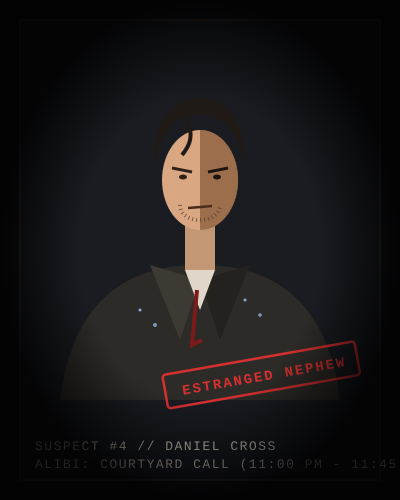
Victor's Estranged Nephew & Heir
Claims he was pacing in the garden outside on a phone call from 11:00 PM to 11:45 PM.
Facing crippling gambling debts; stood to inherit the entire fortune until Victor threatened to cut him off.
Every piece of physical and digital trace left behind tells a story. Examine each exhibit closely to uncover hidden connections and lies.
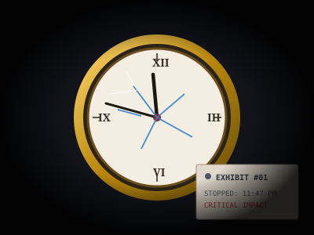
Found beside Victor's body. Shattered glass crystal with hands frozen precisely at 11:47 PM.
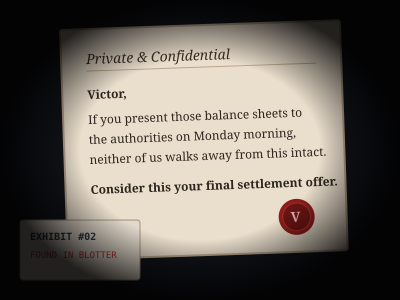
Found in Victor's blotter. An aggressive ultimatum warning against reporting missing corporate funds.
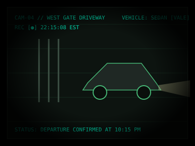
Gate camera shows Marcus Vale's dark sedan departing the manor avenue at 10:15 PM in the rain.
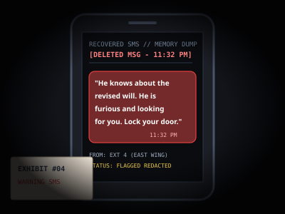
Sent to Victor at 11:32 PM: "He knows about the revised will. He's furious and looking for you. Lock your door."
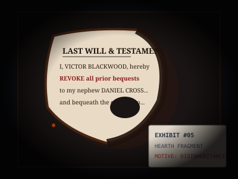
Recovered from the library fireplace. Fragments of a will revoking Daniel Cross's inheritance.
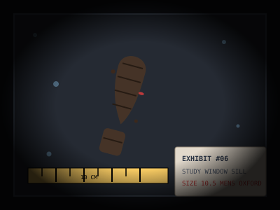
Wet garden soil on the study window sill. Tread matches size 10.5 men's Italian dress shoes.
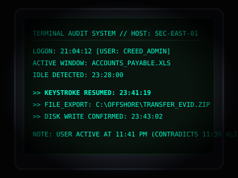
Clara's East Wing workstation logged active keystrokes and file exports at 11:41 PM, contradicting her 11:30 PM sleep alibi.
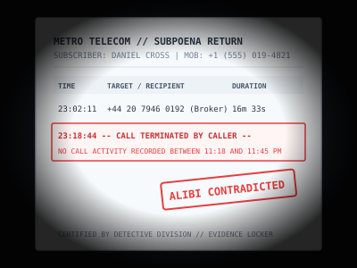
Carrier logs prove Daniel's call terminated abruptly at 11:18 PM. Leaves an unverified 29-minute gap until 11:47 PM.
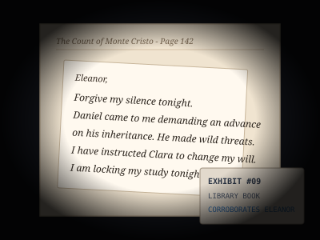
Tucked into Eleanor's book. Victor warns of Daniel's threats over inheritance and writes that he is locking his study.
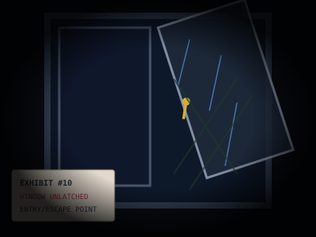
Second floor casement window found unlatched in the storm. Direct climbable access via the rose garden trellis.
Trace the sequence of fateful events on the night of the murder. Compare sworn statements with hard forensic data.
Security gate CCTV footage confirms Marcus's sedan exited the estate gates down the private avenue following a shouting match with Victor.
Eleanor claims she settled in the ground-floor library with a book until midnight. Housekeeper confirms seeing a reading lamp lit in the library at 10:45 PM.
Daniel claims he walked out into the courtyard gardens in the damp night air to take an urgent overseas phone call regarding his financial positions.
Carrier records prove Daniel's call ended abruptly after 16 minutes. Despite claiming he was on the phone until 11:45 PM, he has zero phone activity for the next 29 minutes while alone in the rainy garden.
Clara Reed claims she finished logging invoices in the East Wing administrative suite at 11:30 PM and immediately retired to her quarters.
A warning text is transmitted to Victor's phone: "He knows about the revised will. He's furious and looking for you. Lock your door." Victor immediately locks the study slide bolt.
Server logs record active file exports on Clara's computer at 11:41 PM. While this contradicts her claim of being asleep, it places her firmly in the East Wing office, far from Victor's study.
Victor's pocket watch shatters against the brass desk trim. Housekeeper hears a violent crash from the 2nd floor study. Intruder enters and flees via the garden trellis window.
Housekeeper Martha knocks repeatedly on the master study door. The internal slide bolt is engaged. No answer from inside.
Door is breached. Victor is found dead. The study window is found wide open with rain pouring in, mud on the sill, and the garden trellis below shaking in the wind.
Pin evidence to suspects, draw red yarn connections, toggle suspicion levels, and keep your detective notes. Everything automatically saves to your dossier.
11:47 PM Impact
Settlement Threat
Marcus Left 10:15
11:32 PM Warning
Revoked Bequest
Size 10.5 on Sill
Clara 11:41 PM
Call Ended 11:18
Victor to Eleanor
Ajar via Trellis
Put each suspect under the interrogation light. Press them with critical questions. Listen for stuttered alibis and watch for fatal contradictions.
"Good evening, Detective. I have already told your officers everything. I was in the library downstairs with my novel. Victor was working late in his study as he always did. Ask whatever you wish, but don't waste your time looking at me."
Review the evidence. Cross-reference the locked room, the 11:47 PM watch, and the alibis. Once you make your accusation, there is no turning back.
Alibi: Reading in the ground floor library until midnight.
Alibi: Left manor gates at 10:15 PM in his sedan.
Alibi: East Wing office until 11:30 PM, then retired.
Alibi: Outside on garden phone call 11:00 - 11:45 PM.